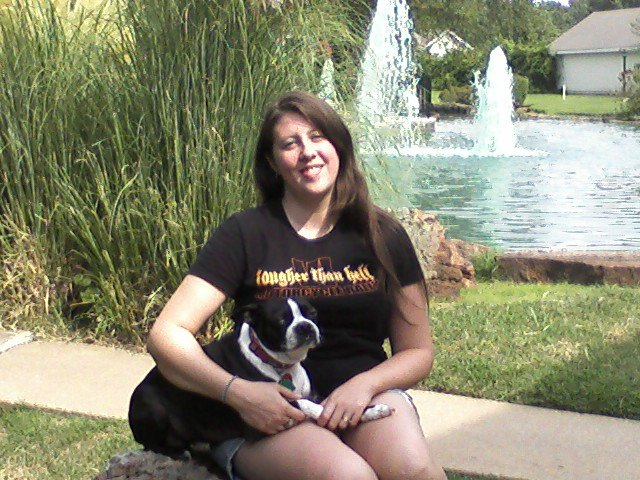

Brandon Ross
Canine Behaviorist — Owner/Founder, The Canine Guru
About
Have Faith in your dog.
I have been studying and training dogs for more than 30 years. I can’t think of anything else I’d rather do.

I have always been fascinated by dogs. I grew up with dogs following me home. The ones I kept were my best friends. I learned something from each of them.
At around 10 I began training Mandy. She was a runaway. One day she was clipped on the nose by a car. I carried her home and vowed it would not happen again. After school, every day, I worked with her until she would stay next to me with the leash dragging. Then my parents found her a new home. I still swear she shed a tear too.
When I first started, I used only instinct. No books, no videos. Friends and neighbors started asking for help. That is when The Canine Guru was really born.
Until 2005 I treated training as a fun hobby. Then I was done with jobs I hated and started a business in Muskogee, Oklahoma. Doggy Times began as a blog in April of ’05; I liked the name enough to put it on the business. It ran two years. I shut it down when I was hired at Pooches in ’07. The blog is still up at doggytimes.wordpress.com.
In ’06 I was hired at Petco as a CEI — Canine Education Instructor — setting up classes, advertising them, teaching them, and training the staff to talk about them. That same year I earned a Dog Obedience Trainer/Instructor certification from Penn Foster, with a 94 of 100 average. I already had the knowledge. Some people do not believe you unless you can show a diploma.
In ’07 I joined the APDT (Association of Pet Dog Trainers) and started at Pooches, an indoor doggy daycare in Tulsa. I managed “Street School” — the issue dogs. Deaf, fearful, dominant, obsessive, extra-hyper. Up to 35 or 40 at a time. I broke up a lot of fights, and I disagreed with taking any dog without an evaluation. After three years I offered my own services again as The Canine Guru, and vowed to teach people about their dogs in an honest way that makes sense to them.
The nickname started as an inside joke from my wife, Laura. It stuck. Some customers have called me a “hometown Cesar Millan” or “The Tulsa Dog Whisperer.” I do not believe in or practice a lot of Cesar’s methods. I agree that energy affects our dogs. I do not use pinch, choke, or electric collars.
I have been studying and training dogs for more than 30 years. I am familiar with more than 250 breeds, and with wolves, coyotes, and foxes. If a client has a rare breed I do not know well, I study it before the first meeting. For the most part, dogs share the same rules, language, and behavior.
Although dogs can learn up to 165 of our words, we cannot talk to them like people and expect them to understand. We need to learn their language. I teach that to my clients. It builds trust. It makes the rules clear.
I am a master of canine psychology and communication, and I use those skills to predict a dog’s next move — and to help people understand their dogs, and dogs understand their people. Dogs are my life and my dream. I will be working with canines as long as I am alive and physically able.
Patience Brings Peace.
Canine Behaviorist — Owner/Founder, The Canine Guru

Pet sitting and appointment scheduling.